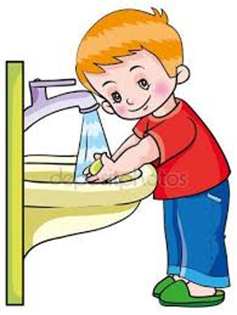
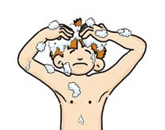
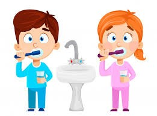

La higiene personal viene ha ser el conjunto de medidas de limpieza que se debe de tomar para el cuidado de nuestro cuerpo.
Tenemos varios hábitos de higiene personal, mencionaremos algunos siendo los siguientes:
| LAVADO DE MANOS |
BAÑO |
LAVADO DE CABEZA Y PEINADO |
CEPILLADO DE DIENTES |
|  |
 |
 |
 |
- Abrir el caño
- Humedecer las manos
- Tener el jabón en las manos.
- Frotar las manos unas a otras con fuerza.
- Seguidamente enjuagar con abundante agua.
- Utilizar el papel toalla para secar las manos.
- El lavado de manos debe realizarse todas las veces que sea necesario por ejemplo cuando se levantan, cuando utilizan los servicios higiénicos, cuando llegas de la calle a tu domicilio.
|
- Ingresar a la ducha.
- Mojar el cabello
- Utilizar champu para frotar bien el cuero cabelludo
- Enjuagar el cabello.
- Lavar con esponja todo el cuerpo con jabón tocador.
- Enjuagar bien
- Secar con una toalla el cabello y el cuerpo.
- Bañarse es importante que debe realizarse todos los días.
|
- En un recipiente poner agua abundante.
- Mojar el cabello.
- Seguidamente hechar champu en el cuero cabelludo y en la punta de los cabellos.
- Seguidamente frotar bien.
- Luego enjuagar con abundante agua.
- Con una toalla secar bien.
- Peinarse bien.
- Debemos de lavarnos el cabello interdiario.
|
- Tener listo en un recipiente agua asi como la pasata de dientes.
- Seguidamente colocar el cepillo de dientes con la pasta dental en las encias.
- Hacer movimientos suaves cortos que cubran todos los dientes.
- Cepillar todo los dientes tanto externamente como internamente con varios movimientos.
- Seguidamente enjuagar con agua.
- Hacer este procedimiento por 5 minutos aproximadamente enjuagando.
- Cepillarse los dientes debemos de realizar cuando se levantan o cuando consumen sus alimentos. Después del desayuno, después del almuerzo asi como la cena.
|